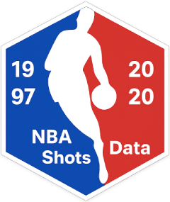

Using the Shiny App
Walkthrough for the NBA Shot Data Explorer (1997–2020)
Source:vignettes/using-shiny-app.Rmd
using-shiny-app.RmdOverview
This vignette shows how to launch and use the interactive Shiny app bundled with asg4nbashots to explore shot locations, accuracy, and expected points across the 1997–2020 NBA seasons.
You’ll learn how to:
- Launch the app from the package
- Use the sidebar controls (year, season type, outcomes)
- Read the two tabs (Shot Location Plot; Accuracy & Expected Points)
- Save/share reproducible settings
1) Install and load
# Install (from GitHub)
remotes::install_github("ETC5523-2025/assignment-4-packages-and-shiny-apps-mozuqi25")
# Load the package
library(asg4nbashots)
# Optionally preview the dataset structure
str(nba_shots)2) Launch the app
Use the exported helper to open the bundled app.
# Launch the app (opens in a browser window)
asg4nbashots::run_nbashots_app()Tip: First launch can take a moment while R loads data and compiles packages.
3) Sidebar controls
The left panel controls the data shown in both tabs.
Show All Year Data (Overlay) Displays per-year points on the “Accuracy & Expected Points” tab (you’ll see a cloud of faint dots per distance).
Average of Overall Years Shows the pooled average curve across all years (single dot per distance).
Year slider When neither of the two checkboxes above is active, the slider filters the app to a specific year.
Season type Choose Regular Season, Playoffs, or both.
Shot Outcome (Shot Location tab only) Filter to Scored, Missed, or both. (On the Accuracy tab, both are enforced since accuracy/expected points require both attempts and makes.)
4) Shot Location Plot (tab)
What you’ll see:
- Scatter of shots transformed to a single offensive half (left-hand side).
- Red = scored, blue = missed. Darker areas = more attempts.
- Reference lines mark baseline, half-court and sidelines.
How to use:
- Toggle Season type to compare Playoffs vs Regular Season patterns.
- Use Shot Outcome to focus on scored-only patterns or missed-only clusters.
- Switch Year (or aggregate all years) to see historical changes.
5) Accuracy & Expected Points (tab)
What you’ll see:
- Black points = average shot accuracy by distance (made / attempts).
-
Red points = average expected points by distance
(
mean(shot_type * shot_made_flag)), so 3s count triple when made. - The x-axis caps at ~33 ft (≈ 400 in, half court). Grey vertical markers show key distances (e.g., ~2.5 ft, ~22–29 ft).
Typical stories to look for:
- Very close range (< 2.5 ft) has the highest accuracy.
- Mid-range (≈ 2.5–22 ft) maintains fairly steady accuracy.
- Long range (> 22 ft) accuracy drops, but expected points can rise near the 3-point line because made shots are worth 3.
Good combos to try:
- Average of Overall Years ON, Show All Year Data (Overlay) OFF → clean, pooled curves.
- Turn Overlay ON → see per-year variability around the pooled curve.
- Turn both OFF and pick a Year → one specific season.
6) Troubleshooting
-
App won’t launch? Restart R and try
asg4nbashots::run_nbashots_app()again. - Long first load? That’s normal; the dataset is large. Later loads are faster.
- Nothing appears / red error in a plot? Make sure at least one Season type is selected.
- Confusing results? Check whether you’ve enabled overlays versus pooled averages, or chosen a specific year.
Acknowledgements
This app and dataset packaging were inspired by the Stand-up Maths video “We analysed 4,678,387 NBA shots”. Source data come from public NBA shot logs (as hosted on data.world/sportsvizsunday).